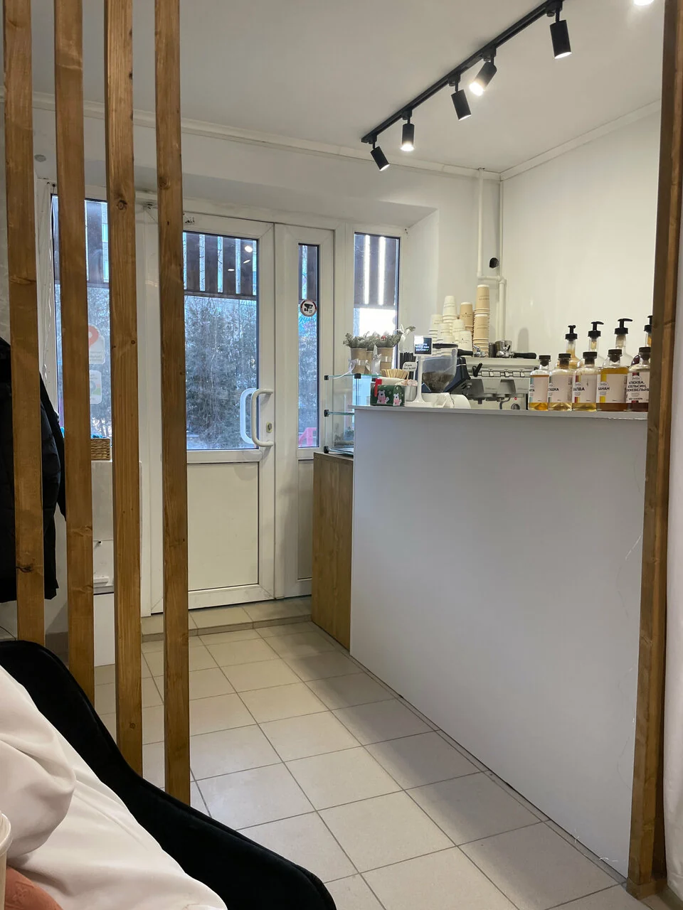
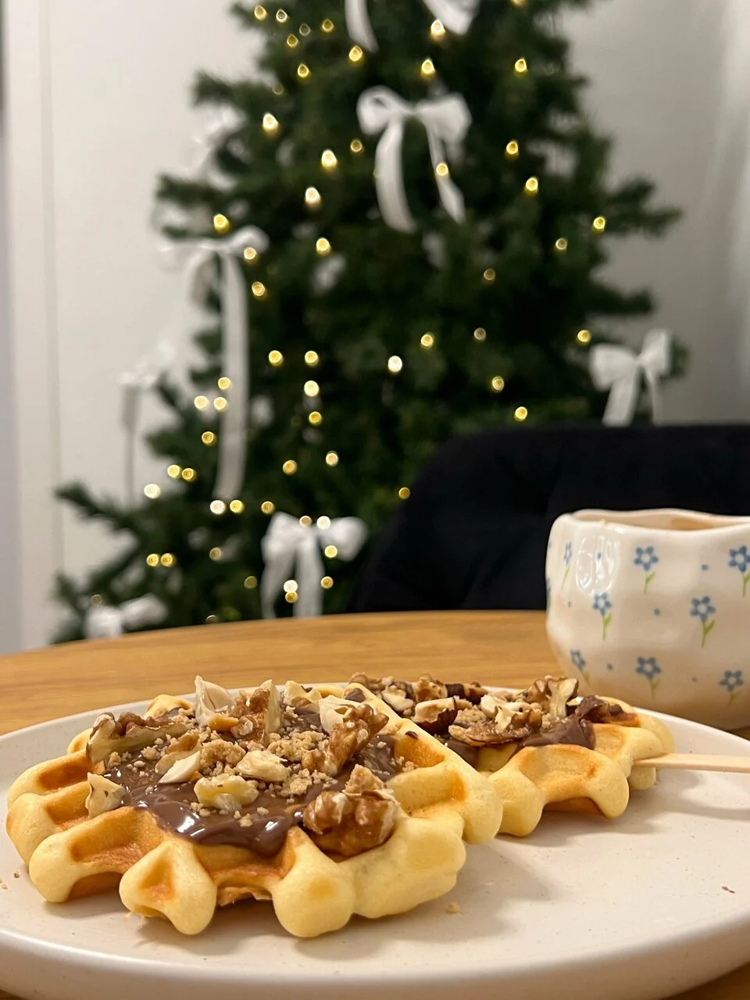

Hot Cup Coffee · Луховицы
Пауза
со вкусом
кофе.
Тёплая чашка. Нежная пенка.
Маленький момент, который — только твой.
Жуковского, 27Будни 09:00–20:00 · Выходные 10:00–20:00
Немного времени себе
01 / ПРОСТО ХОРОШИЙ МОМЕНТ
У города свой ритм.
У твоей чашки — свой.
Забежать за кофе по пути. Задержаться у окна.
Взять что-нибудь сладкое и никуда не спешить.
В Hot Cup Coffee всегда есть повод для паузы.
03 / МЕСТО ДЛЯ ПАУЗЫ
У окна.
Как у себя.
Место, где можно выдохнуть.
Оставайся у окна или бери кофе с собой.


«Самая любимая кофейня в городе, всегда вкусно и уютно».
05 / УЖЕ ПОЧТИ ЗДЕСЬ
Твоя чашка
ждёт тебя.
Hot Cup Coffee
Луховицы, улица Жуковского, 27
Построить маршрут
Откроется карточка кофейни
в Яндекс Картах.